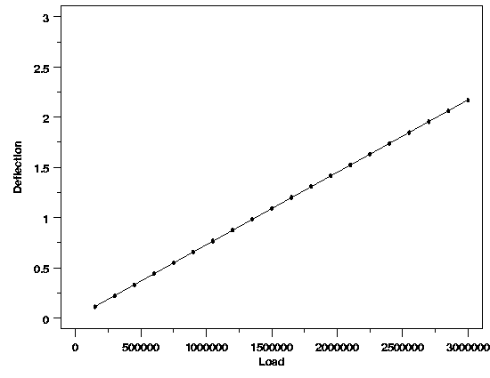
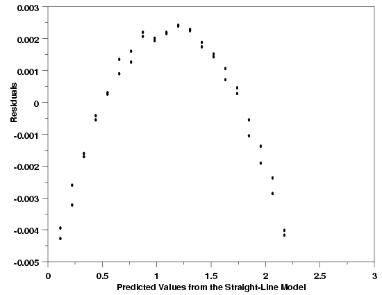
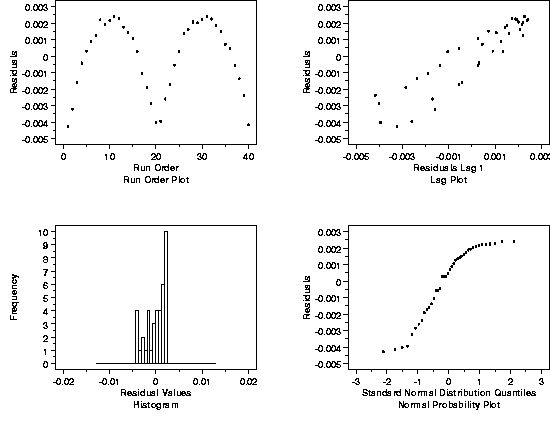

4.6. Case Studies in Process Modeling
4.6.1. Load Cell Calibration
4.6.1.4. |
Graphical Residual Analysis - Initial Model |
{kind=link}


|
4.
Process Modeling
4.6. Case Studies in Process Modeling 4.6.1. Load Cell Calibration
|
|||
| Potentially Misleading Plot | After fitting a straight line to the data, many people like to check the quality of the fit with a plot of the data overlaid with the estimated regression function. The plot below shows this for the load cell data. Based on this plot, there is no clear evidence of any deficiencies in the model. | ||
|  | |||
| Avoiding the Trap | This type of overlaid plot is useful for showing the relationship between the data and the predicted values from the regression function; however, it can obscure important detail about the model. Plots of the residuals, on the other hand, show this detail well, and should be used to check the quality of the fit. Graphical analysis of the residuals is the single most important technique for determining the need for model refinement or for verifying that the underlying assumptions of the analysis are met. | ||
| Residual plots of interest for this model include: | |||
| A plot of the residuals versus load is shown below. | |||
| Hidden Structure Revealed |
|
||
| Scale of Plot Key | The structure in the relationship between the residuals and the load clearly indicates that the functional part of the model is misspecified. The ability of the residual plot to clearly show this problem, while the plot of the data did not show it, is due to the difference in scale between the plots. The curvature in the response is much smaller than the linear trend. Therefore the curvature is hidden when the plot is viewed in the scale of the data. When the linear trend is subtracted, however, as it is in the residual plot, the curvature stands out. | ||
| The plot of the residuals versus the predicted deflection values shows essentially the same structure as the last plot of the residuals versus load. For more complicated models, however, this plot can reveal problems that are not clear from plots of the residuals versus the predictor variables. | |||
| Similar Residual Structure |  | ||
| Additional Diagnostic Plots | Further residual diagnostic plots are shown below. The plots include a run order plot, a lag plot, a histogram, and a normal probability plot. Shown in a two-by-two array like this, these plots comprise a 4-plot of the data that is very useful for checking the assumptions underlying the model. | ||
| 4-plot |  | ||
| Interpretation of Plots | The structure evident in these residual plots also indicates potential problems with different aspects of the model. Under ideal circumstances, the plots in the top row would not show any systematic structure in the residuals. The histogram would have a symmetric, bell shape, and the normal probability plot would be a straight line. Taken at face value, the structure seen here indicates a time trend in the data, autocorrelation of the measurements, and a non-normal distribution of the residuals. | ||
| It is likely, however, that these plots will look fine once the function describing the systematic relationship between load and deflection has been corrected. Problems with one aspect of a regression model often show up in more than one type of residual plot. Thus there is currently no clear evidence from the 4-plot that the distribution of the residuals from an appropriate model would be non-normal, or that there would be autocorrelation in the process, etc. If the 4-plot still indicates these problems after the functional part of the model has been fixed, however, the possibility that the problems are real would need to be addressed. | |||

{kind=link}
{kind=link}